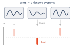
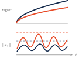
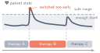
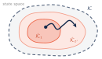

Research
I study how a decision-maker should learn and act when the environment is initially unknown. Each action then does double duty: it determines immediate performance, and it generates the data on which later decisions rely. My work asks how information should be acquired while decisions are being made, which guarantees can be maintained during learning rather than only at its end, and what safety, robustness, and scalability cost in performance. Linear–quadratic and switched systems are the settings in which I analyze these questions, because they admit sharp finite-time results; the questions themselves belong to sequential decision-making in general, which I aim to explore further.
Mixed discrete–continuous decision-making

My current work studies decisions that pair a discrete choice, which mode or alternative to commit to, with continuous control within it. A central instance is identification: among several unknown dynamical systems, which has the smallest optimal long-run cost? It is an analogue of best-arm identification in multi-armed bandits, with differences that change the problem. A mode's value is never sampled; it must be inferred by learning the dynamics. Observations depend on the trajectory and on the control policy, so they are not independent samples, and the continuous control choices determine how informative they are. Switching between alternatives may also be limited by safety and by minimum commitment periods.
I am developing confidence bounds on mode values, built from system-identification confidence sets and Riccati perturbation analysis, together with allocation rules that respect stability and switching constraints. A guiding question is how the difficulty of identification depends jointly on the gaps between modes, the learnability of each system, and the information gathered through interaction. Related directions include best-region identification over continuously parameterized decision spaces, restless-bandit problems with controlled dynamics, and interacting decision-makers, with applications in energy systems, robotics, and healthcare operations.
- From Best-Arm to Best-Mode Identification In preparation.
Anytime learning and performance–safety trade-offs

Guarantees for learning-based control are usually stated for a horizon fixed in advance, with exploration tuned to that horizon. For linear–quadratic systems with unknown dynamics, I developed an anytime algorithm: the exploratory input perturbation decays over time, so no horizon needs to be known, and with high probability the regret is of order √t, up to logarithmic factors, at every time t, together with a bound on the state.
However, regret is a cumulative measure: it does not reveal how large the state may become during learning. A central challenge is that switching between individually stabilizing controllers can amplify transient responses. Existing approaches often rely on common Lyapunov functions or impose strong sequential stability, which restricts changes between successive controllers to prevent transient amplification. I showed that these restrictions can be relaxed through a continuously parameterized family of algorithms, equipped with a dwell-time mechanism for exploration–exploitation trade-off tuning. This framework reveals an explicit trade-off between regret and state regulation: tightening the update rule improves the state bound at the expense of the regret guarantee, but only up to a threshold.
- Any-Time Regret-Guaranteed Algorithm for Control of Linear Quadratic Systems With C. Langbort. Under revision at Journal of Machine Learning Research.
Decision-making across regime changes

Many dynamical systems operate across multiple regimes, such as alternative treatments or operating configurations, each governed by potentially unknown dynamics. Regime changes may be dictated by external decisions or environmental conditions, leaving the controller responsible for learning how to act within each regime and ensuring that transitions occur safely. This is challenging because switching can amplify transient responses even when individual regimes are stable, and switching too early may cause the state to exceed acceptable limits.
My research develops learning-based control strategies that accommodate externally specified regime changes while providing guarantees on stability and performance. In my recent work on switched linear–quadratic systems with unknown dynamics, I developed a data-dependent dwell-time mechanism that regulates transitions and bounds the expected state norm across switches. The resulting expected regret, relative to a benchmark that knows the dynamics of every regime, grows sublinearly with the number of switches, apart from an additional term accounting only for unfavorable transitions—those into regimes with a higher optimal cost-to-go. These results motivate a related but distinct question: what if the decision-maker can also choose which regime to operate in? This leads to my ongoing research on safe best-mode identification, where learning, regime selection, and switching constraints must be addressed jointly.
- Regret-Guaranteed Safe Switching: LQR Setting with Unknown Dynamics With S. R. Etesami and C. Langbort. Under review at SIAM Journal on Control and Optimization.
- Learn and Control while Switching: With Guaranteed Stability and Sublinear Regret With C. Langbort. IEEE Transactions on Automatic Control.
- Joint Stabilization and Regret Minimization through Switching in Over-Actuated Systems With K. Azizzadenesheli and C. Langbort. IFAC ROCOND.
Safe and robust learning under uncertainty

A learner acting under uncertainty may be unsure not only of how its environment behaves, but also of which decisions are safe and whether the data it learns from can be trusted. My work addresses both: learning under uncertainty-dependent safety constraints, and robustness to adversarial data corruption.
In the first setting, the safety set depends on unknown quantities that must be learned while the system operates, so the learner must explore without crossing a boundary it does not yet know. Using kernel-based confidence sets together with control Lyapunov and control barrier function certificates, I designed decision rules that guarantee forward invariance of a certified safe region with high probability while learning the safety set itself.
In the second, an adversary corrupts the stored data the learner relies on. For linear–quadratic decision problems with unknown dynamics, I quantified how this data poisoning propagates through estimation into later decisions: a standard optimistic learner's confidence sets can miss the true model, and its regret can become linear. I developed a self-correcting algorithm whose confidence sets account for bounded corruption, preserving sublinear regret.
- Safety-Aware Learning-Based Control of Systems with Uncertainty-Dependent Constraints With C. Langbort. American Control Conference.
- Regret Bounds for LQ Adaptive Control Under Database Attacks With C. Langbort. Automatica.
- Safe Learning-Based Control: Higher-Order Control Barrier Functions Certification In preparation.